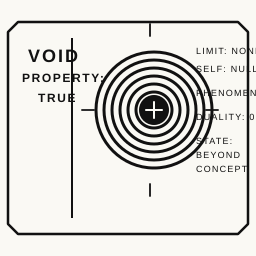
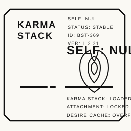

Signal block / status
This page reframes the custom SVG studies as a usable design language for product storytelling, technical branding, and editorial portfolio layouts. It is meant to feel like a living archive, not a static asset dump.


The SVGs act like structural design anchors. The result is something you can use for featured portfolio work, service narratives, or a visual thesis on how you think through systems and execution.
This lead panel is designed for portfolio framing. It gives a project enough atmosphere to feel authored, while still leaving room for real explanation, outcomes, and technical depth.


This composition is a good fit for methodology, engagement structure, or a breakdown of how ideas move from direction to implementation to shipping.


The aim here is repeatability. Each module is strong enough to stand alone, but consistent enough to create a recognizable visual language across the site.

Ideal for systems design, architecture, custom builds, or technical direction work.

Useful for capability summaries, toolchain snapshots, or compact proof-point blocks.
Fits status markers, hero accents, or small interface moments throughout the main website.
This page shows one direction: technical visuals, modular storytelling, and a layout system that can scale from a single feature to a full case-study archive.